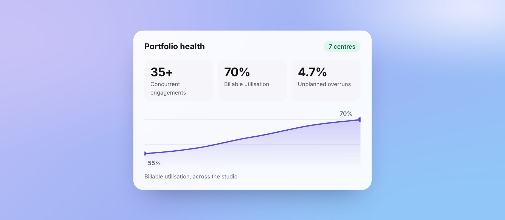

Operationalising a 250+ designer studio
Took a fast-growing design organisation from reactive to predictable.

Outcomes
| Measure | Before | After |
|---|---|---|
| Time to staff a confirmed project | ~5 days | <1.5 days |
| Billable utilisation | ~55% | ~70% |
| Unplanned project overruns | 20% | 4.7% |
| Schedule variance across the portfolio | — | <5% |
Also: 20+ escalated programs recovered through re-baselining and stakeholder realignment; 300–400 design days saved a year through a reusable knowledge library, and research setup cut by 30% across 30+ engagements with a shared ResearchOps toolkit.
What moved the numbers
No single fix produced these results. They came from a dozen levers across five areas, working together.
Predictable, billable delivery
- −70%staffing time
- +15 ptsbillable utilisation
- 4.7%unplanned overruns
Demand and intake
One intake door and faster allocation. An earlier view of demand, so staffing was planned ahead. More accurate sales estimates. Pushing deals to close sooner.
Scope and commercial control
Change control that billed out-of-scope work. Tighter roadmap and plan governance by every PM.
Risk and escalation
Earlier risk visibility. Structured recovery of 20+ escalated programs.
Delivery flow
Cross-team workflows that prevent slippage. Technical feasibility gates that cut design rework.
People and consistency
Coaching and supporting 11 PMs. Consistent design workflows across centres, down to how Figma files are organised.
Context
250+ designers, 11 PMs and 35 concurrent programs across 7 centres. Each department ran its own processes. There was no shared intake, prioritisation or governance.
Work arrived without goals or scope. Capacity risks surfaced late. Handoffs were fragmented, and ownership between design, PM and engineering was unclear.
What I did
I rebuilt the operating model at three levels at once.
- Portfolio: governance cadences, OKR and KPI architecture, executive reporting, health dashboards, escalation paths.
- Delivery: one intake and prioritisation workflow, capacity planning for 250+ designers, review cadences, design-to-dev handoff and QA standards, Figma file governance across all 7 centres.
- Knowledge: a reusable UX library across 60+ projects, covering components, domain learnings and templates.
Every system was designed to run without me in the room.